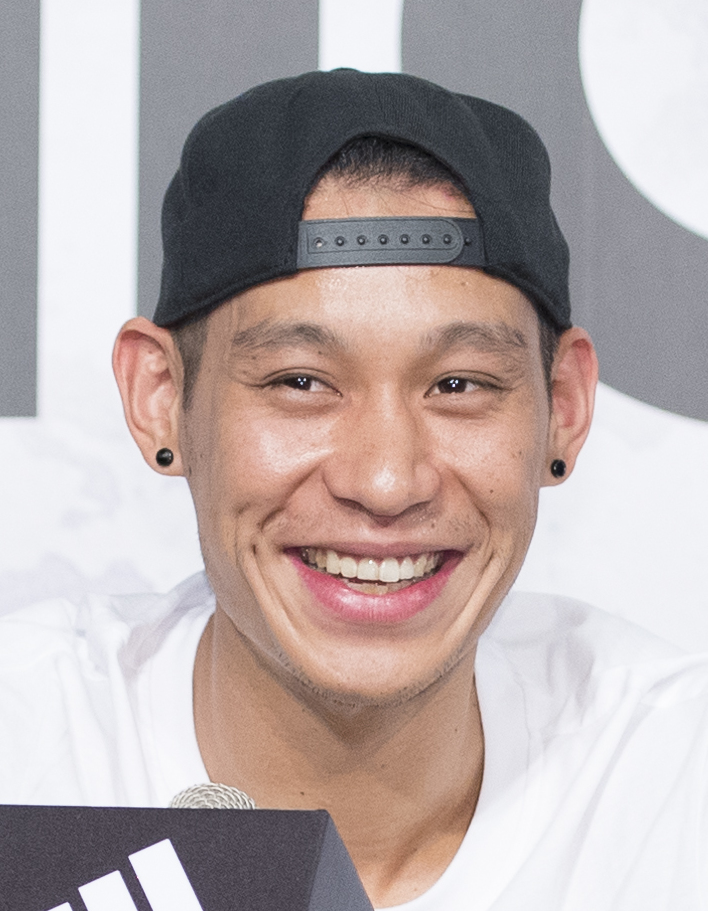
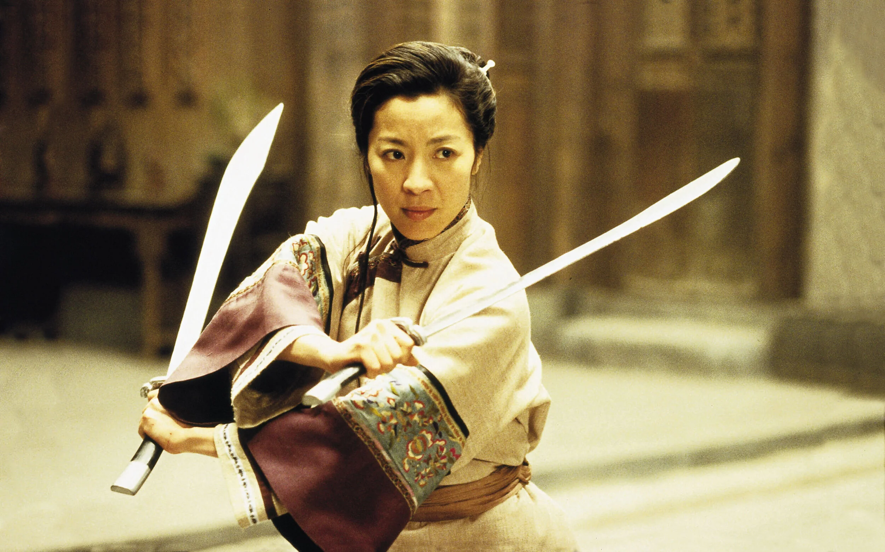
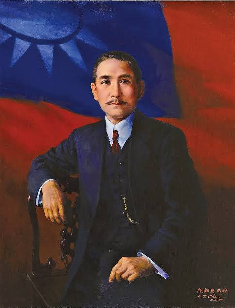
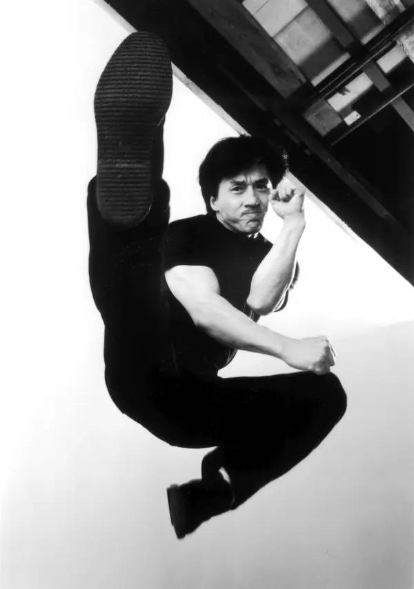
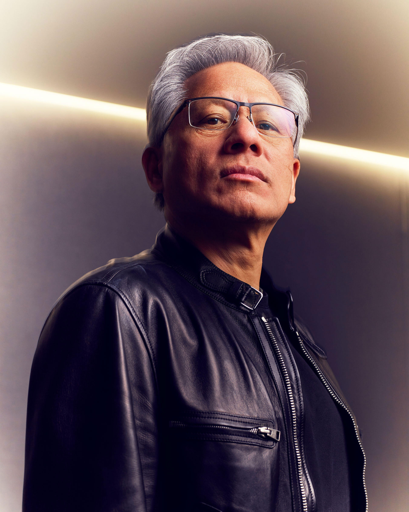

Jeremy Lin is an American professional basketball player who is of Taiwanese descent. He is known for being the first Asian American to be drafted into the NBA. He won the NBA Championship in 2019 with the Toronto Raptors.

Michelle Yeoh is a Malaysian-born actress who starred in blockbusters such as Crouhcing Tiger Hidden Dragon, Crazy Rich Asians, and Everything Everywhere All At Once.

Sun Yat-Sen (孫中山) was a Chinese physician, revolutionary and political philosopher who founded the Republic of China (ROC) and the Kuomintang (KMT). Sun is credited with leading the 1911 Revolution and overthrowing the Qing dynasty. He served as the first president of the Provisional Government of the Republic of China (1912) and as the inaugural premier of the Kuomintang.

Jackie Chan, born Chan Kong-sang, is a Hong Kong actor, filmmaker, and martial artist known for his unique blend of comedy, martial arts, and acrobatics. Chan's signature fighting style incorporates slapstick humor and everyday objects like chairs and ladders, making his action scenes both comical and impressive.

Jen-Hsun "Jensen" Huang is a Taiwanese-American electrical engineer and business executive who co-founded Nvidia in 1993 and has served as its CEO and president ever since. Under his leadership, Nvidia has evolved from a gaming graphics hardware designer to a leading provider of AI and high-performance computing infrastructure. Huang is known for his passion and for developing specialized computing architectures that can process complex data sets.
